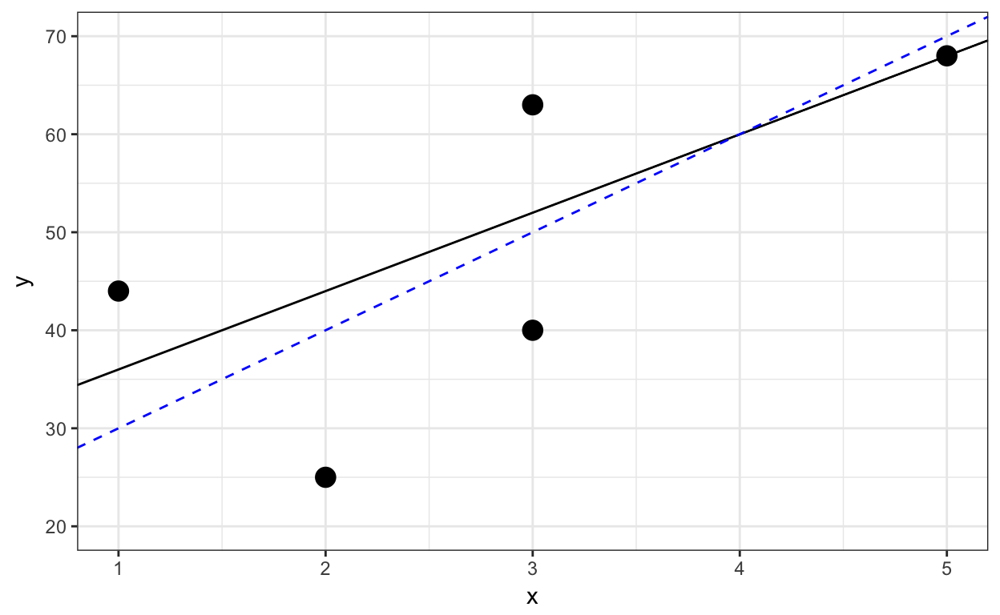
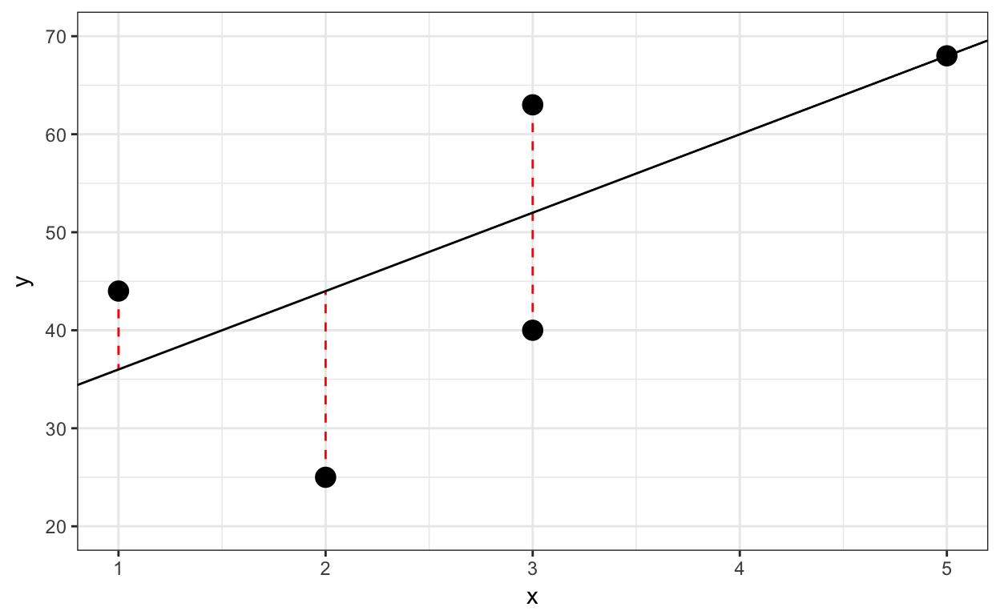
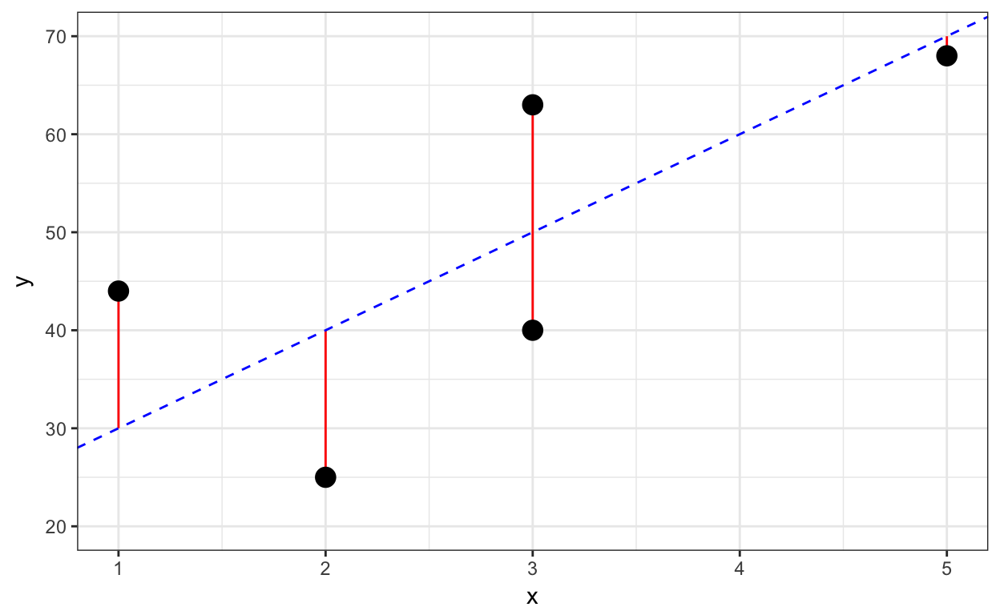
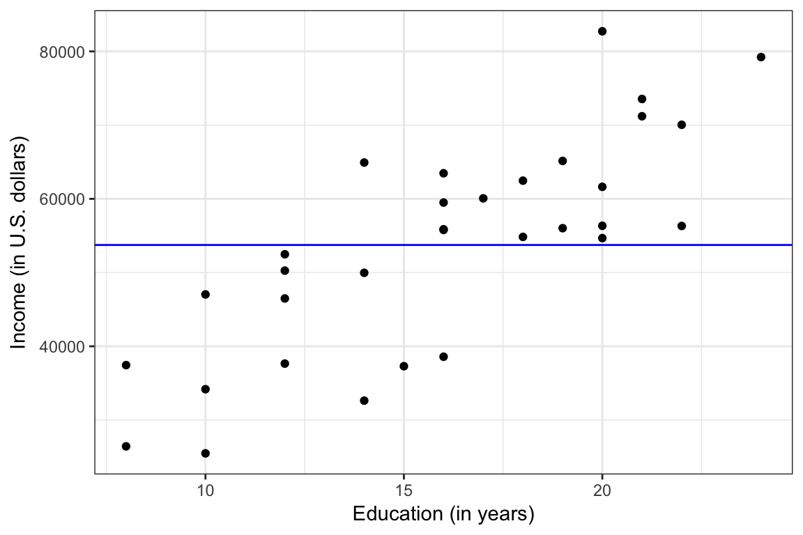
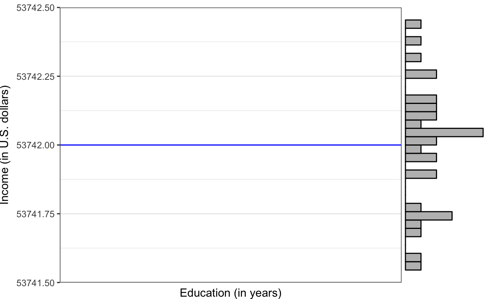
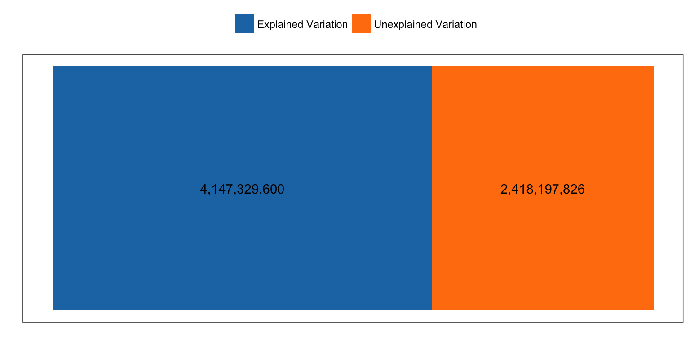

First we will read in the riverside.csv data and load the ggplot2 library.
# Read in data
city = read.csv(file = "~/Dropbox/epsy-8251/data/riverside.csv")
city# Load libraries
library(ggplot2)
library(dplyr)Then we will regress income on education level.
# Fit regression model
lm.1 = lm(income ~ 1 + education, data = city)
lm.1##
## Call:
## lm(formula = income ~ 1 + education, data = city)
##
## Coefficients:
## (Intercept) education
## 11321 2651The fitted regression equation is
\[ \hat{\mathrm{Income}} = 11,321 + 2,651(\mathrm{Education~Level}) \]
How does R determine the coefficient values of \(\hat{\beta}_0=11,321\) and \(\hat{\beta}_1=2,651\)? These values are estimated from the data using a method called Ordinary Least Squares (OLS).
To understand how Ordinary Least Squares (OLS) works, consider the following toy data set of five observations:
Which of the following two models fits these data better?
We could plot the data and both lines and try to determine which seems to fit better. The plot below shows the observed data, the line for Model A (solid, black), and the line for Model B (dashed, blue)

In this case, the lines are similar and it is difficult to make a determination of which fits the data better by eyeballing the two plots. Instead of guessing which model fits better, we can actually quantify the fit to the data by computing the residuals (errors) for each model and then compare both sets of residuals; larger errors indicate a worse fitting model (i.e., more misfit to the data).
Remember, to compute the residuals, we will first need to compute the predicted value (\(\hat{Y}_i\)) for each of the five observations for both models.
| x | y | Predicted | Residual |
|---|---|---|---|
| 3 | 63 | 52 | 11 |
| 1 | 44 | 36 | 8 |
| 3 | 40 | 52 | -12 |
| 5 | 68 | 68 | 0 |
| 2 | 25 | 44 | -19 |
The residuals are visualized as the vertical distance between the observed data and the prediction line.

| x | y | Predicted | Residual |
|---|---|---|---|
| 3 | 63 | 50 | 13 |
| 1 | 44 | 30 | 14 |
| 3 | 40 | 50 | -10 |
| 5 | 68 | 70 | -2 |
| 2 | 25 | 40 | -15 |
We can again visualize the residuals.

Which model has the smaller residuals? Eyeballing the numeric values of the residuals is problematic. The size of the residuals is similar for both Models. Also, the eyeballing method would be impractical for larger datasets. So, we have to further quantify the model fit (or misfit). The way we do that in practice is to consider the total amount of error across all the observations.
It would be reasonable to think about T]the total amount of error as a sum. Unfortunately, since some of our residuals are negative and some are positive, the sum can be misleading. A sum can also be influenced by single values. Consider two models that produce the following residuals for \(n=3\) observations.
It is clear that Model A produces smaller residuals and fits better. However, is we summed the residuals, Model B has a sum of zero (which is smaller than Model A’s sum of four).
One way to alleviate this issue is to take the absolute value of each residual before we sum. Unfortunately, absolute values functions are problematic when we differentiate them (which is how we optimize). An alternative method to deal with this same problem is to square each residual before summing them. This is the method that was adopted by Gauss when he proposed OLS many years ago.
\[ \begin{split} \mathrm{Total~Error} &= \sum \hat{\epsilon_i}^2 \\ &= \sum \left( Y_i - \hat{Y}_i \right)^2 \end{split} \]
This is called a sum of squared residuals or sum of squared error (SSE; good name, isn’t it). Compute the SSE for the residuals from Model A and Model B.
\(\mathrm{SSE}_{\mathrm{Model~A}}=\\[1.5em]\)
\(\mathrm{SSE}_{\mathrm{Model~B}}=\)
Once we have quantified the model misfit, we can choose the model that has the least amount of error. Since Model A has a lower SSE than Model B, we would conclude that Model A is the better fitting model to the data.
In the vocabulary of statistical estimation, the process we just used to adopt Model A over Model B was composed of two parts:
In our example we used the SSE as the quantification of model fit, and then we optimized by selecting the model with the lower SSE. When we use lm() to fit a regression analysis to the data, R needs to consider not just two models, like we did in our example, but all potential models (i.e., any intercept and slope). The model coefficeints that lm() returns are the “best” in that no other values for intercept or slope would produce a lower SSE. The model returned has the lowest SSE possible thus least squares.
For our toy dataset, the model that produces the smallest residuals is
\[ \hat{Y} = 28.682 + 8.614(X) \]
This model gives the following residuals:
| x | y | Predicted | Residual |
|---|---|---|---|
| 3 | 63 | 49.61 | 13.39 |
| 1 | 44 | 33.48 | 10.52 |
| 3 | 40 | 49.61 | -9.614 |
| 5 | 68 | 65.75 | 2.25 |
| 2 | 25 | 41.55 | -16.55 |
The SSE is 661.16. This is the smallest SSE possible for a linear model. Any other value for the slope or intercept would result in a higher SSE.
Finding the the intercept and slope that give the lowest SSE is referred to as an optimization problem in the field of mathematics. Optimization is such an important (and sometimes difficult) probelm that there have been several mathematical and computational optimization methods that have been developed over the years. You can read more about mathematical optimization on Wikipedia if you are interested.
One common mathematical method to find the minimum SSE involves calculus. We would write the SSE as a function of \(\beta_0\) and \(\beta_1\), compute the partial derivatives (w.r.t. each of the coefficients), set these equal to zero, and solve to find the values of the coefficients. You can read here. The lm() function actually uses an optimization method called QR decomposition to obtain the regression coefficients. The actual mechanics and computation of these methods are beyond the scope of this course. We will just trust that the lm() function is doing things correctly in this course.
Since the regression model is based on the lowest SSE, it is often useful to compute and report the model’s SSE. We can use R to compute the SSE by carrying out the computations underlying the formula for SSE. Recall that the SSE is
\[ \mathrm{SSE} = \sum \left( Y_i - \hat{Y}_i\right)^2 \]
We need to compute (1) the predicted values of \(Y\), (2) the residuals, (3) the squared residuals, and finally, (4) the sum ofthe squared residuals. From the data set we have the observed \(X\) and \(Y\) values, and from the fitted lm() we have the intercept and slope for the regression equation.
# Step 1: Compute the predicted values of Y
city %>%
select( income, education ) %>%
mutate( y_hat = 11321 + 2651 * education )# Step 2: Compute the residuals
city %>%
select( income, education ) %>%
mutate( y_hat = 11321 + 2651 * education ) %>%
mutate( errors = income - y_hat )# Step 3: Compute the squared residuals
city %>%
select( income, education ) %>%
mutate( y_hat = 11321 + 2651 * education ) %>%
mutate( errors = income - y_hat ) %>%
mutate( sq_errors = errors ^ 2 )# Step 4: Compute the sum of the squared residuals
city %>%
select( income, education ) %>%
mutate( y_hat = 11321 + 2651 * education ) %>%
mutate( errors = income - y_hat ) %>%
mutate( sq_errors = errors ^ 2 ) %>%
summarize( SSE = sum(sq_errors) )We could also do this computation by combining the computations in the mutate() functions into the summarize() function directly. (Note that the select() function is completely unnecessary.)
city %>%
summarize( SSE = sum( (income - (11321 + 2651 * education) ) ^ 2 ) )The SSE gives us information about the variation in \(Y\) that is left over (residual) after we fit the regression model. Since the regression model is a function of \(X\), the SSE tells us about the variation in \(Y\) that is left over after we remove the variation associated with, or accounted for by \(X\). In our example it tells us about the residual variation in incomes after we account for employee education level.
In practice, we often report the SSE, but we do not interpret the actual value. The value of the SSE is more useful when comparing models. When researchers are considering different models, the SSEs from these models are compared to determine which model produces the least amount of misfit to the data (similar to what we did earlier).
Consider the equation for the linear model again,
\[ Y_i = \beta_0 + \beta_1(X_i) + \epsilon_i. \]
A simpler model (one with fewer terms) would be,
\[ Y_i = \beta_0 + \epsilon_i. \]
This model, referred to as the intercept-only model or the baseline model, does not include the effect of \(X\). The value of \(Y\) is not a function of \(X\) in this model; it is not conditional on \(X\). The fitted equation,
\[ \hat{Y}_i = \hat{\beta}_0 \]
indicates that the predicted \(Y\) would be the same (constant) regardless of what \(X\) is. In our example, this would be equivalent to saying that an employees’ incomes would be predicted to be the same, regardless of what their education level was.
To fit the intercept-only model, we just omit the prediter term on the right-hand side of the lm() formula.
lm.0 = lm(income ~ 1, data = city)
lm.0##
## Call:
## lm(formula = income ~ 1, data = city)
##
## Coefficients:
## (Intercept)
## 53742The fitted regression equation for the intercept-only model can be written as,
\[ \hat{\mathrm{Income}} = 53,742 \]
Graphically, the fitted line is a flat line crossing the \(y\)-axis at 53,742 (see plot below).

Does the estimate for \(\beta_0\), 53,742, seem familiar?
city %>% summarize( M = mean(income) )The estimated intercept in the intercept-only model is the mean value of the response variable. This is not a coincidence. Remember that the regression model estimates the mean,
\[ E(Y) = \beta_0. \]
Here, \(E(Y)\) is the mean, \(\mu_Y\). The model itself does not consider any predictors, so on the plot the \(X\) variable is superfluous; we could just collapse it to its margin. This is why the mean of all the \(Y\) values is sometimes referred to as the marginal mean.

Yet another way to think about this value is that the model is choosing a single income (\(\hat{\beta}_0\)) to be the predicted income for all the employees. Which value would be a good choice? Remember the lm() function chooses the “best” value for the parameter estimate based on minimizing the sum of squared errors. The mean is the value that minimizes the squared deviations (errors). This is one reason the mean is often used as a summary measure of a set of data.
Since the intercept-only model does not include any predictors, the SSE is a quantification of the total variation in the response variable. It can be used as baseline measure of the error variation in the data. Below we compute the SSE for the intercept-only model (if you need to go through the steps one-at-a-time, do so.)
city %>%
summarize( SSE = sum( (income - mean(income) ) ^ 2 ) )The SSE for the intercept-only model represents the total amount of variation in the sample incomes. As such we can use it as a baseline for comparing other models that include predictors. For example,
Once we account for education in the model, we reduce the SSE. This means our predictions improve (they are closer to the observed \(Y\) values). How much did they improve? They were reduced by 4,147,329,600. Is this a lot? To answer that question, we typically compute and report this reduction as a proportion of the total variation; called the proportion of the reduction in error, or PRE.
\[ \begin{split} \mathrm{PRE} &= \frac{6,565,527,426 - 2,418,197,826}{6,565,527,426} \\ &= \frac{4,147,329,600}{6,565,527,426} \\ &= 0.632 \end{split} \]
To interpret this, we might say:
Including education level as a predictor in the model reduced the error in the predictions by 63.2%.
The PRE also has a direct relationship to the correlation coefficient. Namely, it is the square of the correlation coefficient,
\[ \mathrm{PRE} = r^2 \]
Try it out.
cor(city[c("income", "education")]) ^ 2## income education
## income 1.0000000 0.6316828
## education 0.6316828 1.0000000Because of this, it is common for researchers to report the PRE as \(R^2\). In our example, \(R^2 = .632\). (For some reason, the notation we use when reporting the correlation coefficient uses a lower-case \(r\), while the notation for reporting the square of this value uses upper-case, \(R^2\).)
\(R^2\), like the correlation coeffcient, is related to the strength of the linear relationship. Variables that have stronger linear relationships have a higher \(r\) value and thus higher \(R^2\) values. Higher \(R^2\) means more reduction in error, which implies better predictions. In a sense, it quantifies how good the model is, and because of this, \(R^2\) is often provided as an effect size for regression analyses.
Using the SSE terms we can partition the total variation in \(Y\) (the SSE value from the intercept-only model) into two parts (1) the part that is explained by including education into the model, and (2) the part that remains unexplained. Part (2) is just the SSE from the regression model that includes \(X\). Here is the partitioning of the variation in income.
\[ \underbrace{6,565,527,426}_{\substack{\text{Total} \\ \text{Variation}}} = \underbrace{4,147,329,600}_{\substack{\text{Explained} \\ \text{Variation}}} + \underbrace{2,418,197,826}_{\substack{\text{Unexplained} \\ \text{Variation}}} \]
Each of these three terms is a sum of squares (SS). The first is refereed to as the total sum of squares, as it represents the total amount of variation in \(Y\). The second term is commmonly called the regression sum of squares or model sum of squares, as it represents the variation explained by the model. The last term is the residual sum of squares (or error sum of squares) as it represents the left-over variation that is unexplained by the model.
More generally, we can partition the variation using
\[ \mathrm{SS_{\mathrm{Total}}} = \mathrm{SS_{\mathrm{Model}}} + \mathrm{SS_{\mathrm{Error}}}. \]
We can visualize the total variation (\(\mathrm{SS_{\mathrm{Total}}}\)) as the area of a rectangle. Then we will split that rectangle into two parts: the amount of variation that can be explained by including income in the model, and the amount of variation that is still unexplained.

We can also express each part of the partitioned variation as a proportion of the total variation. To do this, divide each term in the expression of partitioned variation by \(\mathrm{SS_{\mathrm{Total}}}\).
\[ \frac{\mathrm{SS_{\mathrm{Total}}}}{\mathrm{SS_{\mathrm{Total}}}} = \frac{\mathrm{SS_{\mathrm{Model}}}}{\mathrm{SS_{\mathrm{Total}}}} + \frac{\mathrm{SS_{\mathrm{Error}}}}{\mathrm{SS_{\mathrm{Total}}}} \]
Using the values for the sum of squares from the example,
\[ \frac{6,565,527,426}{6,565,527,426} = \frac{4,147,329,600}{6,565,527,426} + \frac{2,418,197,826}{6,565,527,426} \]
Reducing this, we get
\[ 1.000 = 0.632 + 0.368 \]
This says that of the total amount of variation (1.000), 63.2% is explained by the model (including education level as a predictor) and 36.8% is unexplained. Note that 0.632 is the same value we got for the PRE and \(R^2\). Thus, another way we can express \(R^2\) mathematically is
\[ R^2 = \frac{\mathrm{SS_{\mathrm{Model}}}}{\mathrm{SS_{\mathrm{Total}}}}. \]
This expression of \(R^2\) leads to a natural interpretation for applied researchers. It is common for applied researchers to interpret the \(R^2\) value as the percentage of variation accounted for in the outcome by the model. In our example, we might interpret the \(R^2\) value of 0.632 as,
The model accounts for 63.2% of the variation in incomes.
Since the model uses the predictor of education level, it is useful to include this in the interpretation. For example,
Differences in education level account for 63.2% of the variation in incomes.